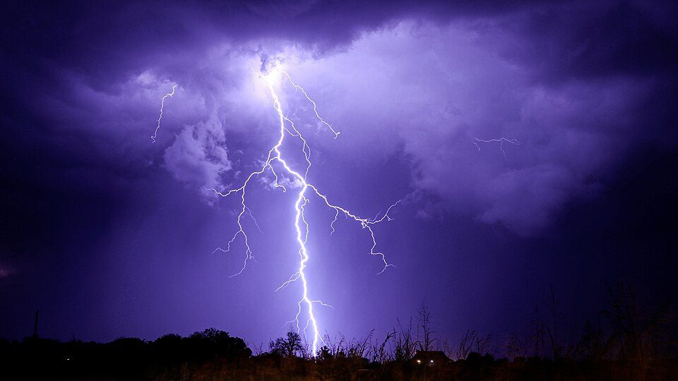
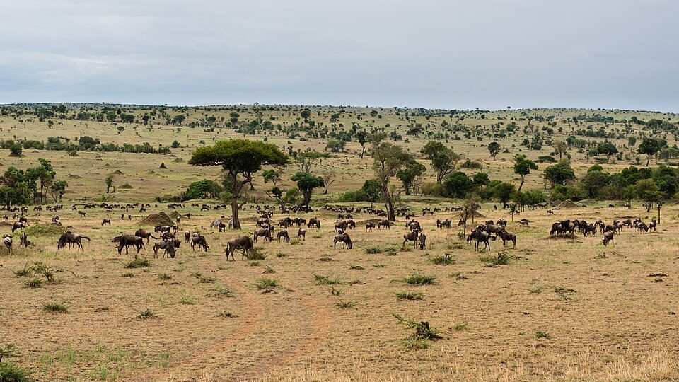

Planet Earth · 6 articles
Atmosphere and climate
The air that protects us, clouds and weather, storms and hurricanes, the world's climates, climate change and the sky's light shows.
A layer of gas so thin that, seen from the Space Station, it looks like a blue halo above the horizon. It gives us air, filters radiation, spreads heat around and makes each day's weather. This section explains how it works and how we are changing it.
- The atmosphereWhat air is made of, its five layers, the ozone layer and why the sky is blue.
 Weather and cloudsHow clouds and rain form, how the weather is forecast, and heat and cold records for the planet and for Spain.
Weather and cloudsHow clouds and rain form, how the weather is forecast, and heat and cold records for the planet and for Spain.
Storms, hurricanes and tornadoesLightning five times hotter than the Sun, hurricanes the size of a country and DANA storms that dump a year's rain in hours.
The world's climatesWhy there are seasons, the Earth's main climate types, the wettest and driest places, and Spain's remarkable climatic variety. Climate changeThe Earth has warmed by more than 1.2 °C since pre-industrial times because of the gases we emit. The evidence, the consequences and the solutions.
Climate changeThe Earth has warmed by more than 1.2 °C since pre-industrial times because of the gases we emit. The evidence, the consequences and the solutions. Auroras, rainbows and lights in the skyNorthern lights, double rainbows, halos, the green flash and mirages: the physics behind the atmosphere's light shows.
Auroras, rainbows and lights in the skyNorthern lights, double rainbows, halos, the green flash and mirages: the physics behind the atmosphere's light shows.